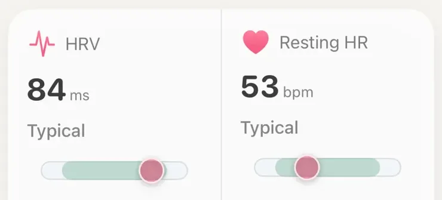

Ratgeber
Einen einzigen Normalwert für die HRV der Apple Watch gibt es nicht. Schon die Durchschnitte gesunder Gruppen reichen von etwa 30 bis über 90 Millisekunden (ms), und einzelne Menschen streuen noch deutlich weiter, je nach Alter, Fitness, Veranlagung und Zeitpunkt der Messung. „Gut“ ist eine HRV, die in deinem eigenen üblichen Bereich liegt. „Zu niedrig“ heißt nur dann etwas, wenn sie für dich niedrig ist, und zwar länger als ein, zwei Morgen.
Hier liest du, was die Zahl auf deiner Uhr eigentlich ist, warum andere Geräte andere Werte zeigen, was sie nach unten drückt und wann ein niedriger Wert ein Grund für den Arztbesuch ist.
Die Herzfrequenzvariabilität (HRV) beschreibt, wie stark der Abstand zwischen zwei Herzschlägen schwankt. Selbst bei 60 Schlägen pro Minute liegt nicht genau eine Sekunde zwischen jedem Schlag, mal etwas weniger, mal etwas mehr. Bist du erholt, schwankt dieser Abstand meist stärker; unter Belastung wird er gleichförmiger. Mehr dazu in was HRV eigentlich ist (auf Englisch).
Laut Apples HealthKit-Dokumentation zeichnet die Apple Watch die HRV automatisch auf und nutzt dafür SDNN: die Standardabweichung der Abstände zwischen normalen Herzschlägen, in Millisekunden. Die Uhr misst nicht ständig. Sie nimmt kurze Messungen zu unregelmäßigen Zeitpunkten vor, wenn du ruhig bist, auch in der Nacht, und die Health-App listet jede einzeln auf. Eine Nacht enthält meist nur eine Handvoll davon, jede ist also nur eine kleine Stichprobe deiner Nacht.
Viele Ringe, Brustgurte und Sportuhren geben einen anderen HRV-Wert an, den RMSSD: wie stark sich der Abstand im Mittel von einem Schlag zum nächsten ändert. Beide stammen aus denselben Herzschlägen, werden aber anders berechnet. RMSSD spiegelt vor allem die beruhigende (vagale) Seite des Nervensystems; SDNN erfasst diese auch, dazu aber langsamere Schwankungen der Herzfrequenz (Shaffer und Ginsberg, 2017). Außerdem messen Geräte zu unterschiedlichen Zeiten: eine einzelne kurze Messung, ein festes Fenster früh in der Nacht oder ein Schnitt über den ganzen Schlaf.
Zeigt die Apple Watch also 38 ms und ein anderes Gerät in derselben Nacht 55 ms, ist das kein Widerspruch, sondern zwei verschiedene Maßstäbe. Keiner ist falsch, man kann sie nur nicht Zahl für Zahl vergleichen. Vergleiche jedes Gerät mit sich selbst.
Nunan und Kollegen (2010) haben 44 Studien mit gesunden Erwachsenen (21.438 Personen) zusammengefasst, gemessen über wenige Minuten in Ruhe. Der SDNN lag im Schnitt bei etwa 50 ms, die Studiendurchschnitte reichten von 32 bis 93 ms. Der RMSSD lag bei etwa 42 ms, von 19 bis 75 ms (tabelliert bei Shaffer und Ginsberg, 2017). Das sind Gruppendurchschnitte; einzelne Menschen streuen viel weiter.
Zwei gesunde 40-Jährige können 40 ms auseinanderliegen, und beiden geht es gut.
Am stärksten wirkt das Alter. In Daten von über 8 Millionen Fitbit-Nutzern fanden Natarajan und Kollegen (2020), dass die HRV mit dem Alter stetig sinkt. Altini und Plews (2021) sahen bei 28.175 Menschen, die jeden Morgen gemessen haben, dasselbe, während das Geschlecht kaum einen Unterschied in der HRV machte. Eine systematische Übersichtsarbeit von 2025 (Brozat und Kollegen) kommt zu dem Schluss, dass es noch immer keine allgemein anerkannten HRV-Normalwerte gibt, nur große Studien, die zur groben Orientierung taugen.
Deshalb ist eine Tabelle „gute HRV nach Alter“ weniger nützlich, als sie aussieht. Zwei gesunde 40-Jährige können 40 ms auseinanderliegen, und beide sind in Ordnung. Dein Maßstab ist dein eigener Bereich, genau darum geht es in warum eine Uhr dich mit dir selbst vergleichen sollte (auf Englisch).
Liegt deine HRV unter deinem Üblichen, ist der Grund meist frisch und alltäglich:
Und manchmal ist gar nichts los. Wenn deine HRV schon immer niedriger war als in Tabellen im Netz, ist das vielleicht einfach dein Niveau.
Einzelmessungen sind verrauscht, und die Uhr liegt bei den absoluten Werten besonders daneben: Im Vergleich mit einem Brustgurt wich die HRV der Apple Watch im Schnitt um etwa 29 % ab und lag etwas niedriger (O'Grady und Kollegen, 2024). Deine eigenen Schwankungen bildet sie besser ab als einen Laborwert.
Eine schlechte Nacht ist Rauschen. Eine schlechte Woche ein Signal.
Plews und Kollegen (2013) empfahlen bei Ausdauerathleten der Spitzenklasse, die HRV als gleitenden Schnitt über etwa eine Woche an der eigenen Ausgangslage zu lesen, statt auf einzelne Tage zu reagieren. Ein niedriger Morgen nach einer Feier sagt wenig. Rutscht der Wochenschnitt deutlich unter dein Übliches, sagt das mehr, vor allem wenn gleichzeitig dein Ruhepuls langsam steigt. Wenn du trainierst, hilft dir Laufen nach schlechtem Schlaf? bei der Entscheidung, was du damit anfängst.

HRV in AeraJede Kachel misst die letzte Nacht an deinem üblichen Bereich der letzten zwei Wochen: Typisch, Niedriger als üblich oder Auffällig niedrig. Keine Bevölkerungsskala.
Aera, für iPhone und Apple Watch
Aera zeigt deine nächtliche HRV im Vergleich zu deinem eigenen Üblichen und erklärt, wo die Zahl nicht mehr verlässlich ist. Die App liest die HRV-Messungen, die deine Apple Watch in Apple Health speichert, auch die aus dem Schlaf, und misst sie an deinem Üblichen der letzten zwei Wochen. Die HRV-Kachel auf dem Home-Bildschirm zeigt dann Typisch, Niedriger als üblich oder Auffällig niedrig (und dasselbe nach oben), und der Schlaf-Bildschirm vermerkt, wenn die HRV der letzten Nacht unter deinem Üblichen lag. Solange noch keine sieben Tage mit Messungen vorliegen, steht dort Lernphase, statt zu raten.
Aera ordnet die HRV nie auf einer Bevölkerungsskala „gut für dein Alter“ ein, weil es dafür keinen anerkannten Maßstab gibt. Tippst du auf die Zahl, erklärt der Field Guide, wie sie zustande kommt, warum die Uhr vom Brustgurt abweicht und warum eine einzelne Nacht vor allem Rauschen ist. Auf dem HRV-Blatt siehst du außerdem die Rohmessungen der Uhr Stunde für Stunde, Lücken eingeschlossen. Es gibt kein Konto, und deine Gesundheitswerte werden auf deinem iPhone berechnet. Deine HRV im Vergleich zu deinem Üblichen ist kostenlos.
Aera ist kein Medizinprodukt.
Einen einzigen Normalwert gibt es nicht. Die Apple Watch gibt die HRV als SDNN in Millisekunden an, und schon die Durchschnitte gesunder Gruppen reichen von etwa 30 bis über 90 ms, einzelne Menschen streuen noch weiter, je nach Alter, Fitness, Veranlagung und Zeitpunkt der Messung. Jüngere Menschen haben meist höhere Werte. Gut ist eine HRV, die in deinem eigenen üblichen Bereich liegt.
Oft wegen etwas Frischem: hartes Training, Alkohol, eine kurze oder unruhige Nacht, Stress, ein warmes Schlafzimmer oder eine beginnende Erkrankung. Es kann aber auch einfach dein normales Niveau sein, denn manche gesunden Menschen haben immer niedrige Werte. Vergleiche sie mit deinem eigenen Schnitt der letzten ein, zwei Wochen, nicht mit anderen.
Die Apple Watch nutzt SDNN, viele Ringe und Gurte geben dagegen RMSSD an, eine andere Berechnung, die aus denselben Herzschlägen andere Zahlen ergibt. Außerdem messen die Geräte zu anderen Zeiten in der Nacht und unterschiedlich lange. Die Werte zweier Geräte sind nicht austauschbar; was zählt, ist der Verlauf auf einem Gerät.
Eine einzelne niedrige Messung ist kein Grund zur Sorge. Sprich mit einer Ärztin oder einem Arzt, wenn deine HRV eine Woche oder länger ohne naheliegenden Grund deutlich unter deinem Üblichen bleibt oder wenn zu einem niedrigen Wert Beschwerden kommen wie Brustschmerzen, Ohnmacht, ein rasender oder unregelmäßiger Herzschlag oder ungewöhnliche Atemnot.
Verwandte Notizen (auf Englisch): was HRV ist · warum eine Uhr dich mit dir selbst vergleichen sollte · warum ist mein Ruhepuls erhöht? · was eine Consumer-Uhr nicht messen kann
Verwandter Ratgeber: Laufen nach schlechtem Schlaf?